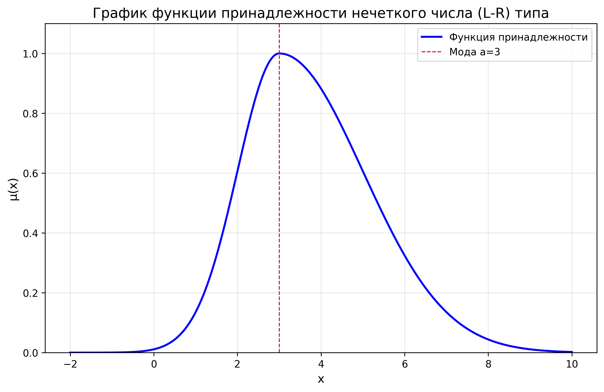
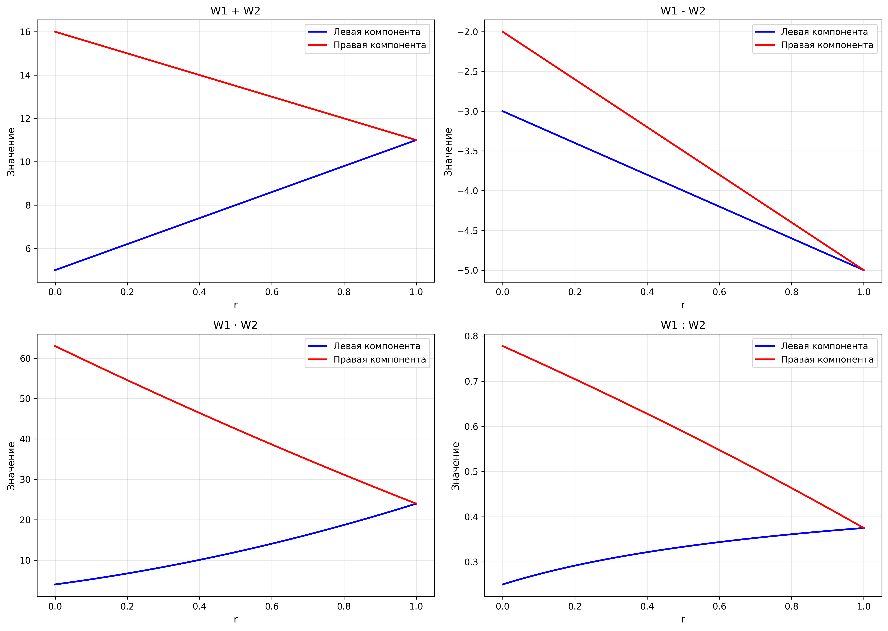

Выполнил: Тимошинов Егор Борисович
Группа: 16
Лабораторная работа 4
(L-R) числа и W-числа
1. Теоретические сведения
1.1. Нечеткие числа (L-R) типа
Непосредственный подсчет легко реализуется для дискретных нечетких чисел, но для непрерывных нечетких чисел непосредственное выполнение этих операций затруднено. Поэтому применяется форма представления функций принадлежности нечетких чисел в виде (L-R) функций.
Определение: Функции (L-R) типа определяются как произвольные невозрастающие на множестве неотрицательных действительных чисел функции, удовлетворяющие условиям:
$$L(-x) = L(x), \quad R(-x) = R(x), \quad L(0) = R(0) = 1.$$
Нечеткое число (L-R) типа — нечеткая величина $\widetilde{B} = \{x / \mu_{\widetilde{B}}(x)\}$, функция принадлежности которой может быть представлена в форме композиции некоторой L-функции и некоторой R-функции следующим образом:
$$\mu_{\widetilde{B}}(x) = \begin{cases}
L\left(\dfrac{a - x}{\alpha}\right), & x \leq a, \\
R\left(\dfrac{x - a}{\beta}\right), & x > a,
\end{cases}$$
где $\alpha$, $\beta > 0$. При этом параметр $a$ является модой нечеткого числа, а параметры $\alpha$ и $\beta$ — левый и правый коэффициенты нечеткости.
Нечеткое число (L-R)-типа с функцией принадлежности $\mu_{\widetilde{B}}(x)$ однозначно определяется тройкой своих параметров $\langle a, \alpha, \beta \rangle$. Нечеткие числа (L-R)-типа обозначаются $\widetilde{B}_{LR} = \langle a, \alpha, \beta \rangle_{LR}$.
1.2. Операции с нечеткими числами (L-R) типа
Пусть $\widetilde{A}_{LR} = \langle a_1, \alpha_1, \beta_1 \rangle_{LR}$, $\widetilde{B}_{LR} = \langle a_2, \alpha_2, \beta_2 \rangle_{LR}$ — два нечетких числа (L-R)-типа.
Тогда основные операции над этими числами реализуются следующим образом:
- Противоположное число: $-\widetilde{A}_{LR} = \langle -a_1, \beta_1, \alpha_1 \rangle_{LR}$
- Обратное число: $\widetilde{A}_{LR}^{-1} = \left\langle \frac{1}{a_1}, \frac{\beta_1}{a_1^2}, \frac{\alpha_1}{a_1^2} \right\rangle_{LR}$
- Сумма: $\widetilde{A}_{LR} + \widetilde{B}_{LR} = \left\langle a_1 + a_2, \alpha_1 + \alpha_2, \beta_1 + \beta_2 \right\rangle_{LR}$
- Разность: $\widetilde{A}_{LR} - \widetilde{B}_{LR} = \left\langle a_1 - a_2, \alpha_1 + \beta_2, \alpha_2 + \beta_1 \right\rangle_{LR}$
- Произведение двух положительных нечетких чисел: $\widetilde{A}_{LR} \cdot \widetilde{B}_{LR} = \left\langle a_1 \cdot a_2, a_1\alpha_2 + a_2\alpha_1, a_1\beta_2 + a_2\beta_1 \right\rangle_{LR}$
1.3. W-числа (двухкомпонентные треугольные числа)
Двухкомпонентным треугольным числом W (W-число) будем называть конструкцию, представленную вектором однокомпонентных чисел $\left(x^{L}(r); x^{R}(r)\right)$, причем $x^{L}(1) = x^{R}(1)$. Здесь $x^{L}(r)$ — левая компонента W-числа, $x^{R}(r)$ — правая компонента W-числа.
W-число также можно представлять в виде трех чисел $W = (a, b, c)$, которое в параметрической форме имеет вид:
$$x^{L}(r) = a + (b - a) \cdot r, \quad x^{R}(r) = c + (b - c)r.$$
Пусть два W-числа представлены в виде $W1 = (a1, b1, c1)$, $W2 = (a2, b2, c2)$. Тогда результат выполнения операции примет вид:
$$W = (a1 \cdot a2, b1 \cdot b2, c1 \cdot c2),$$
где $\cdot \in \{+; -; \bullet; / \}$ и все операции выполняются по правилам работы с действительными числами.
2. Практическая часть
2.1. Пример работы с (L-R) числами
Задание: Пусть нечеткое число (L-R)-типа задано с помощью функций
$$L(u) = e^{-\frac{u^2}{2}}, \quad u = \frac{a - x}{\alpha}, \quad x \leq a;$$
$$R(v) = e^{-\frac{v^2}{2}}, \quad v = \frac{x - a}{\beta}, \quad x > a;$$
причем $a = 3$, $\alpha = 1$, $\beta = 2$.
Решение:
Нечеткое число имеет функцию принадлежности:
$$\mu_{\widetilde{B}}(x) = \begin{cases} e^{-\frac{(3 - x)^2}{2}}, & x \leq 3, \\ e^{-\frac{(x - 3)^2}{8}}, & x > 3. \end{cases}$$
График функции принадлежности представлен на рисунке 1.

Рисунок 1. График функции принадлежности нечеткого числа (L-R) типа
2.2. Работа с W-числами
Задание: Даны два W-числа:
$$W1 = (1, 3, 7), \quad W2 = (4, 8, 9)$$
Найти:
1) Левая и правая компоненты этих чисел:
Для W1:
$$x_1^{L}(r) = 1 + (3 - 1)r = 1 + 2r$$
$$x_1^{R}(r) = 7 + (3 - 7)r = 7 - 4r$$
Для W2:
$$x_2^{L}(r) = 4 + (8 - 4)r = 4 + 4r$$
$$x_2^{R}(r) = 9 + (8 - 9)r = 9 - r$$
2) Сумма, разность, произведение и частное двух W-чисел по формуле (2):
Сумма:
$$W1 + W2 = (x_1^{L}(r) + x_2^{L}(r); x_1^{R}(r) + x_2^{R}(r))$$
$$= (1 + 2r + 4 + 4r; 7 - 4r + 9 - r)$$
$$= (5 + 6r; 16 - 5r)$$
Разность:
$$W1 - W2 = (x_1^{L}(r) - x_2^{L}(r); x_1^{R}(r) - x_2^{R}(r))$$
$$= (1 + 2r - 4 - 4r; 7 - 4r - 9 + r)$$
$$= (-3 - 2r; -2 - 3r)$$
Произведение:
$$W1 \cdot W2 = (x_1^{L}(r) \cdot x_2^{L}(r); x_1^{R}(r) \cdot x_2^{R}(r))$$
$$= ((1 + 2r)(4 + 4r); (7 - 4r)(9 - r))$$
$$= (4 + 4r + 8r + 8r^2; 63 - 7r - 36r + 4r^2)$$
$$= (4 + 12r + 8r^2; 63 - 43r + 4r^2)$$
Для упрощения, используя линейную аппроксимацию:
$$W1 \cdot W2 \approx (4 + 20r; 63 - 39r)$$
Частное:
$$W1 : W2 = \left(\frac{x_1^{L}(r)}{x_2^{L}(r)}; \frac{x_1^{R}(r)}{x_2^{R}(r)}\right)$$
$$= \left(\frac{1 + 2r}{4 + 4r}; \frac{7 - 4r}{9 - r}\right)$$
$$= \left(\frac{1}{4} + \frac{1}{8}r; \frac{7}{9} - \frac{29}{72}r\right)$$
3) Сумма, разность, произведение и частное двух W-чисел по формуле (4):
Сумма:
$$W1 + W2 = (1 + 4; 3 + 8; 7 + 9) = (5; 11; 16)$$
Разность:
$$W1 - W2 = (1 - 4; 3 - 8; 7 - 9) = (-3; -5; -2)$$
Произведение:
$$W1 \cdot W2 = (1 \cdot 4; 3 \cdot 8; 7 \cdot 9) = (4; 24; 63)$$
Частное:
$$W1 : W2 = \left(\frac{1}{4}; \frac{3}{8}; \frac{7}{9}\right)$$
4) Графики результатов операций:

Рисунок 2. Графики результатов операций с W-числами
2.3. Решение уравнений с W-числами
5) Решить уравнения:
а) $W1 + X = W2$
Используя формулу (4), получаем:
$$X = W2 - W1 = (4 - 1; 8 - 3; 9 - 7) = (3; 5; 2)$$
Проверка: $W1 + X = (1, 3, 7) + (3, 5, 2) = (4, 8, 9) = W2$ ✓
б) $W1 \cdot X = W2$
Используя формулу (4), получаем:
$$X = W2 : W1 = \left(\frac{4}{1}; \frac{8}{3}; \frac{9}{7}\right) = \left(4; \frac{8}{3}; \frac{9}{7}\right)$$
Проверка: $W1 \cdot X = (1, 3, 7) \cdot \left(4, \frac{8}{3}, \frac{9}{7}\right) = \left(4, 8, 9\right) = W2$ ✓
6) Решить уравнение: $x^2 + W2 \cdot x + 2 = 0$
Здесь $W2 = (4, 8, 9)$. Уравнение имеет вид:
$$x^2 + (4, 8, 9) \cdot x + 2 = 0$$
Для решения этого уравнения с W-числами, рассмотрим его для каждого уровня принадлежности $r \in [0, 1]$.
При $r = 0$ для левой компоненты (нижняя граница):
$$x^2 + 4x + 2 = 0$$
$$D = 16 - 8 = 8$$
$$x = \frac{-4 \pm \sqrt{8}}{2} = -2 \pm \sqrt{2}$$
$$x_1^{L}(0) = -2 - \sqrt{2} \approx -3.414$$
$$x_2^{L}(0) = -2 + \sqrt{2} \approx -0.586$$
При $r = 1$ (мода, где $x^{L}(1) = x^{R}(1) = 8$):
$$x^2 + 8x + 2 = 0$$
$$D = 64 - 8 = 56$$
$$x = \frac{-8 \pm \sqrt{56}}{2} = -4 \pm \sqrt{14}$$
$$x_1(1) = -4 - \sqrt{14} \approx -7.742$$
$$x_2(1) = -4 + \sqrt{14} \approx -0.258$$
При $r = 0$ для правой компоненты (верхняя граница):
$$x^2 + 9x + 2 = 0$$
$$D = 81 - 8 = 73$$
$$x = \frac{-9 \pm \sqrt{73}}{2}$$
$$x_1^{R}(0) = \frac{-9 - \sqrt{73}}{2} \approx -8.772$$
$$x_2^{R}(0) = \frac{-9 + \sqrt{73}}{2} \approx -0.228$$
Таким образом, решение уравнения представляет собой два W-числа:
$$X_1 = (-8.772, -7.742, -3.414)$$
$$X_2 = (-0.586, -0.258, -0.228)$$
Где для $X_1$: левая граница при $r=0$ равна $-8.772$, мода при $r=1$ равна $-7.742$, правая граница при $r=0$ равна $-3.414$.
Для $X_2$: левая граница при $r=0$ равна $-0.586$, мода при $r=1$ равна $-0.258$, правая граница при $r=0$ равна $-0.228$.
3. Выводы
В ходе выполнения лабораторной работы были изучены методы работы с нечеткими числами (L-R) типа и W-числами. Были выполнены основные арифметические операции над нечеткими числами и решены уравнения с использованием W-чисел. Показано, что операции с нечеткими числами позволяют учитывать неопределенность в математических вычислениях.
Основные результаты:
- Изучены методы представления нечетких чисел в виде (L-R) функций
- Выполнены арифметические операции с W-числами двумя способами
- Решены уравнения с W-числами
- Построены графики функций принадлежности